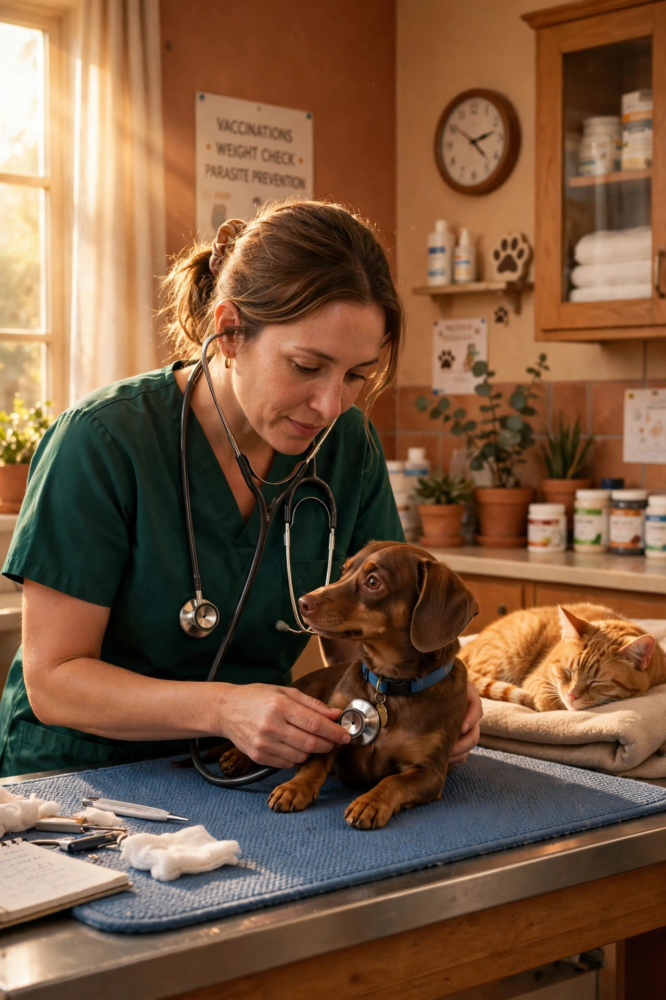

01
Cuéntanos qué le pasa
Selecciona si es perro, gato o exótico e indícanos el motivo de tu consulta: revisión de rutina, vacuna, síntoma o urgencia.
Clínica veterinaria en Morelia · Bocanegra
Clínica veterinaria en Morelia para perros, gatos y animales exóticos — consultas, vacunas, cirugía, laboratorio y urgencias. Agenda en 1 minuto.

Cita de hoy — Lun–Sáb 10:00–19:00 hrs. Atención oportuna y diagnósticos el mismo día.
Exóticos y pequeñas especies — aves, reptiles y pequeños mamíferos.
Imagen de muestra generada con IA — foto real de la clínica: [a confirmar].
Proceso sencillo
01
Selecciona si es perro, gato o exótico e indícanos el motivo de tu consulta: revisión de rutina, vacuna, síntoma o urgencia.
02
Disponibilidad continua de lunes a sábado de 10:00 a 19:00 hrs. Reserva en menos de 1 minuto.
03
Te recibimos en Calle María Rodríguez del Toro de Lazarín 59-A, Col. Bocanegra. Instalaciones limpias y de fácil acceso en Morelia.
Triage clínico y atención prioritaria
Los minutos cuentan. Si observas alguna de las señales de alarma, comunícate con nuestro equipo antes de trasladarte.
Nota honesta: Confirme disponibilidad de urgencias nocturnas contactando directamente vía telefónica antes de trasladarse.
Portafolio clínico verificado
Infraestructura adecuada, tecnología diagnóstica y ética médica para el bienestar de caninos, felinos y especies exóticas.
Evaluación clínica completa para perros, gatos y animales exóticos. Historial médico minucioso y revisión sistemática.
Esquemas de vacunación según especie, edad y refuerzos anuales. Cartilla oficial actualizada.
Control interno y externo adaptado al peso, estilo de vida y edad de tu compañero.
Esterilización y castración responsable, cirugías de tejidos blandos y procedimientos quirúrgicos con monitoreo anestésico.
Limpieza dental ultrasónica, extracción de piezas dañadas y tratamiento de gingivitis.
Área de estancia supervisada para pacientes posquirúrgicos o en tratamiento con fluidoterapia y oxigenoterapia.
Hemogramas, química sanguínea, urianálisis, coprológicos y pruebas rápidas de enfermedades infecciosas.
Diagnóstico no invasivo para tórax, abdomen, fracturas, cuerpos extraños y gestación.
Programas de nutrición según etapa biológica, control de peso y chequeos geriátricos.
Soporte para traumatismos, intoxicaciones agudas y cuadros repentinos. Confirme disponibilidad de urgencias nocturnas contactando directamente vía telefónica antes de trasladarse.
Farmacia interna: farmacia veterinaria interna con medicamentos prescritos y productos de cuidado — consulta existencias por teléfono.
Cita rápida
Sin esperas al teléfono ni formularios engorrosos. Selecciona el tipo de compañero y el servicio, y completa tu solicitud.
1. Tipo de mascota:
2. Motivo principal:
Trayectoria y compromiso
Más de 5 años de experiencia cuidando a las mascotas de Morelia (fuente: directorios verificados del sector).
5+
Años continuos de atención veterinaria en Colonia Bocanegra.
[a confirmar con la clínica antes de publicar la versión final]
Tutor de mascota — Paciente de Morelia
[Testimonio sobre atención quirúrgica y seguimiento postoperatorio: a confirmar directamente con la clínica]
Tutor de mascota — Atención en Clínica Inara
Las calificaciones y el número de reseñas del directorio son contradictorios, por lo que no se publican cifras hasta que la clínica las confirme.
Instalaciones y horarios
Claridad y confianza
Sí. En Centro Veterinario Inara contamos con protocolos de manejo y atención adaptada para pequeñas especies: aves, reptiles y pequeños mamíferos, además de perros y gatos.
Nuestro horario regular de clínica es de lunes a sábado de 10:00 a 19:00 hrs. Para situaciones de urgencia, Confirme disponibilidad de urgencias nocturnas contactando directamente vía telefónica antes de trasladarse. Llama al 443 274 9465 antes de trasladarte para que el equipo médico esté listo para recibirte.
Los costos de consulta general, cuadro de vacunas y procedimientos quirúrgicos se informan tras la valoración médica presencial en clínica. [a confirmar] Llama al 443 274 9465 para cotizar vía telefónica.
Recomendamos ampliamente agendar cita para evitar tiempos de espera y garantizar el tiempo que tu mascota necesita. También puedes llamar al 443 274 9465 para coordinar tu visita.
Atención personalizada en Morelia
Morelia, Michoacán · Calle María Rodríguez del Toro de Lazarín 59-A, Col. Bocanegra · 443 274 9465
Los costos de consultas, estudios y cirugías se informan tras la valoración médica presencial en clínica. [a confirmar]